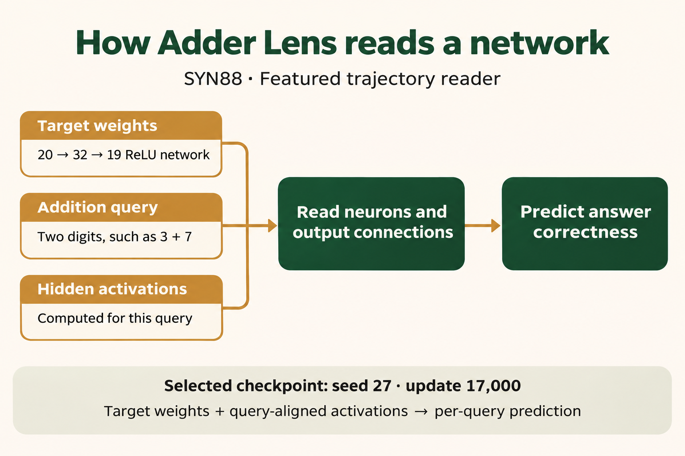

Explore in your browser
The neuron demo replays saved model outputs. No installation or GPU required.
Open neuron completionEXPLORE / RUN / TRAIN
Interactive examples first. Models and reproducible walkthroughs when you want to dig deeper.
Compare original, blanked and repaired networks. Explore answers, weights and confidence.
Open the demo →Six visual tasks, from shape and texture to counting and direction. Explore real training samples.
Browse the images →Run a trained reader that predicts whether an addition network answers a query correctly.
Explore the model →The neuron demo replays saved model outputs. No installation or GPU required.
Open neuron completionWalkthroughs download trained readers and matching targets with verified checksums. CUDA is the default.
Run the trained readerFollow the data splits, model configuration and evaluation steps, then compare against the released reader.
Neuron reader trainingSYN88 · ACTIVATION-ASSISTED READER
Predicting whether another network gets an addition problem right.
Historical correctness-prediction accuracy
Query predictions in the saved evaluation
Independent target-root families

Canonicalized weights and biases, an arithmetic query, and its hidden ReLU activations from a 20–32–19 target MLP. The reader predicts correctness; target output logits are excluded from its inputs.
The walkthrough selects seed 27 at update 17,000 by the lowest saved validation objective among three released seeds. Downloads use pinned revisions and SHA-256 checks. Inference defaults to CUDA, with an explicit small CPU alternative.
Predict an MNIST classifier’s mean loss from 192 statistics of its saved parameters.

The released tensor-statistics Lens achieved 0.17140 mean absolute error in the saved development comparison, against 0.83429 for the constant training-mean baseline. The comparison covers ten target states from two development roots.
The image track also includes six purpose-built visual tasks.
Sprites, shapes, textures, counting, location and arrow direction create different kinds of visual structure for target classifiers to learn. Browse 180 verified training examples from the redesigned collection.
Open the training gallery →Download the custom-image target classifiers on Hugging Face →